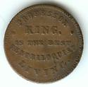

Professor King Token 1875
10/12/2011
{kind=link}

When Mark Cahill made inquiry as to how he could order ventriloquist collector coins to be added to his collection, he sent me pictures of a couple rare ventriloquist coins from his collection. The photo here shows one, a copper & brass token (about the size of a US one cent piece). The obverse side reads: PROFESSOR KING IS THE BEST VENTRILOQUIST LIVING. The reverse side reads: KING THE GREAT PRESTIDIGITATEUR (SIC) AND MODERN SAMPSON.Dated 1875, I would be curious to know how many of these were placed into circulation initially and what their value night be on today's market.
I'd be even more curious to know what the collector coins I'm putting into circulation today will be selling for a century from now! Of course, I'll never know, but I can tell you they will likely be even more rare at that point than the coin you see here is today. Especially this year's $7 2011 7/11 coin - less than 100 are in circulation even now. Do you have yours? See the margin listings at http://maherstudios.blogspot.com/
{kind=link}